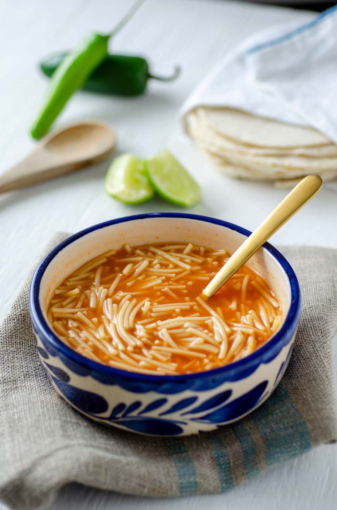

Home
Sopa De Fideo

Description
Fideo soup is what Mexican childhood memories are made of. It is a warm
comforting soup made with a tangy tomato base and golden brown noodles.
Ingrediants
- Pasta fideo packet
- Knorr Granulated Chicken Bouillon Seasoning
- canned tomato sauce
- salt
Steps
-
Place entire fideo packet in pan and let simmer while stirring
occasionally until noodels turn brown
- add 2 cups of water and continue stirring until water is boiling
- add salt and spoonful of knorr seasoning and continue stirring
-
taste if right and let it simmer till noodles are soggy enough to eat